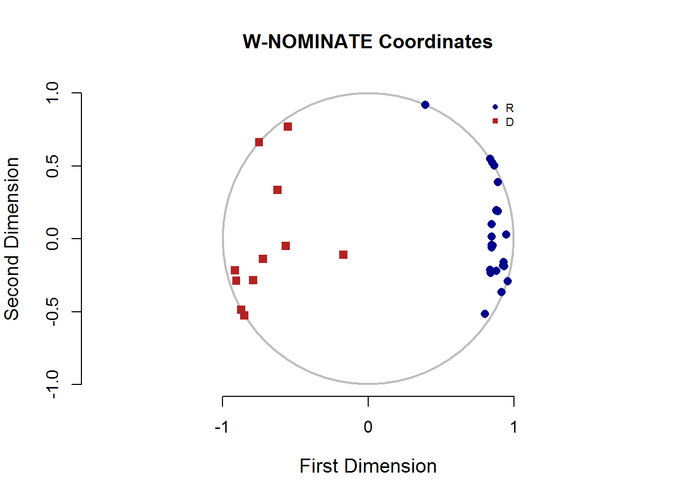
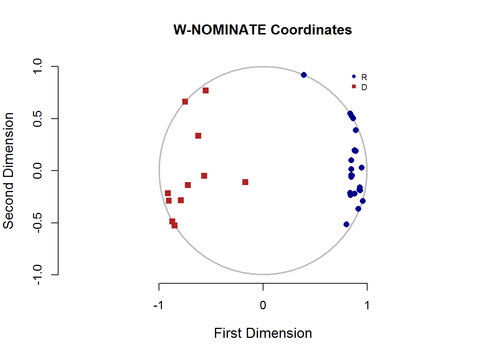
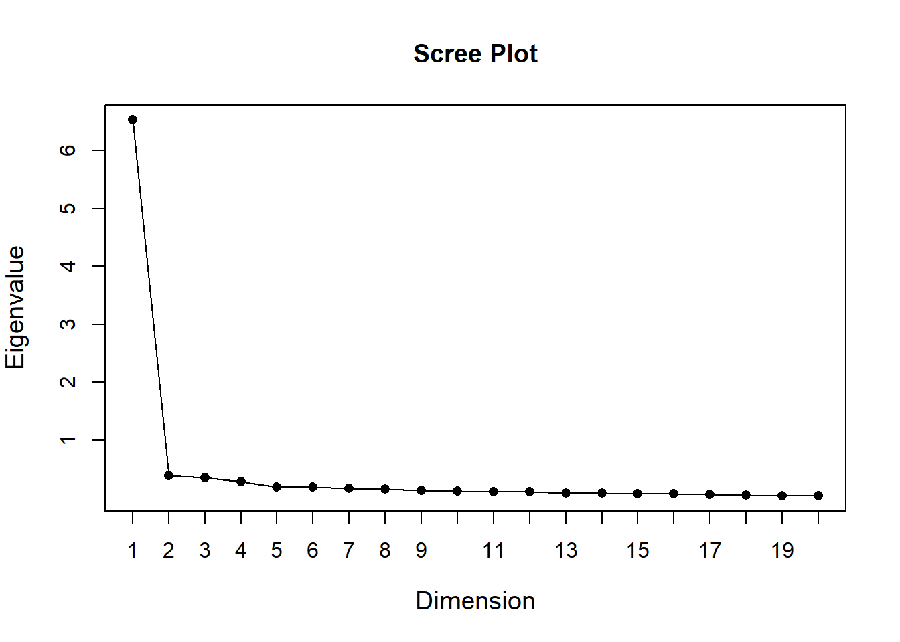
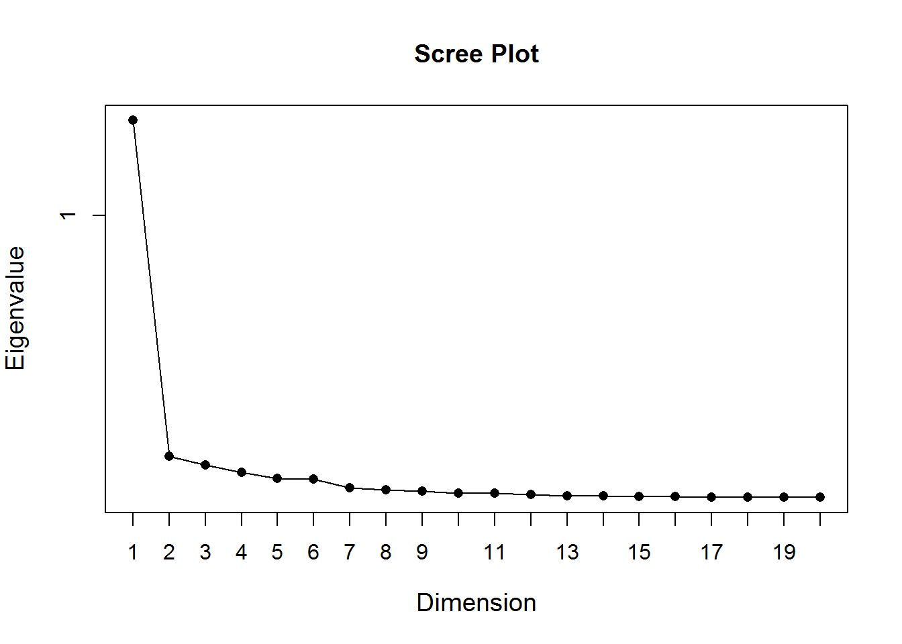
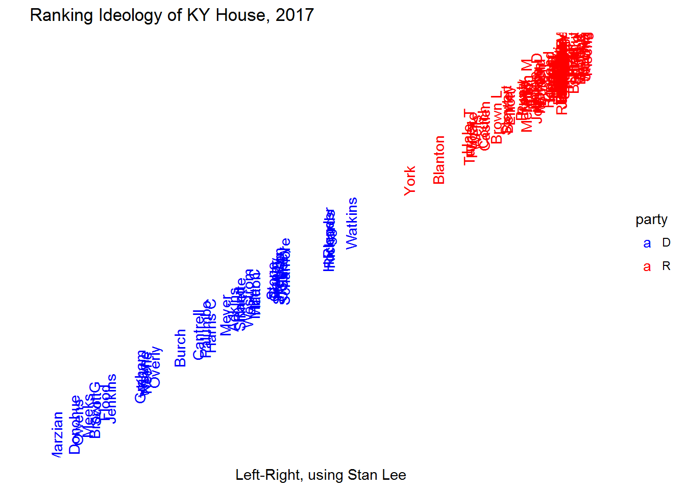
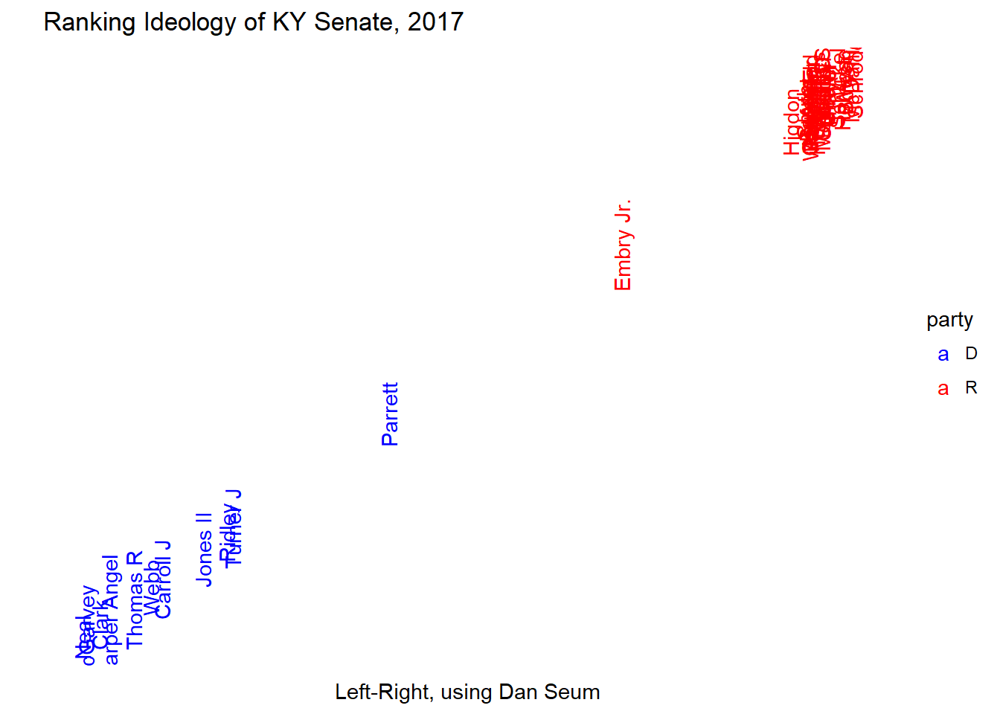

W-Nominate Scores
A few days ago on twitter, I wrote about some work I had done regarding W-Nominate scores and the Kentucky Legislature. I am getting the sense that many people are confused about what exactly W-Nominate is and how it works. So, allow me to try and explain!
What is W-Nominate?
The technical description of W-Nominate, taken directly from their site, is “a scaling procedure that performs parametric unfolding of binary choice data.” As input, the model takes as input a set of binary decisions (votes!) and gives as output a continuous variable that identifies where, along a left-right axis, a legislator falls. Essentially, the model looks at the votes, and tells us how liberal or conservative each legislator is.
The most common question I got about the W-Nominate tweets I sent went something like: “How did you weight each vote?” I expect that many of these questions came from the fact that many of the existing rankings of Kentucky legislators are based on a few votes. Whoever does the work pulls the votes they are most concerned with, sees who voted which way on those few votes (maybe they apply a weight to a few of the most controversial votes), and then does a quick math problem.
This methodology is easy to understand, but it suffers from significant bias. This might not be an issue! The Chamber of Commerce issued a ranking of legislators based on how they voted on bills the chamber supported. Obviously that’s biased, but for the Chamber, that’s a feature (not a bug). They are looking for how people voted on their issues, and their methodology is based on their bills. If you are looking for an unbiased ranking, though, W-Nominate becomes very useful.
The W-Nominate methodology is completely agnostic about the text of a bill. In fact, I didn’t even pass the text or description of the bills to the model at all. The model see who voted for, against, and who passed on each bill. The model does throw out all the votes which were very lopsided, throwing out bills that have less than 2.5% opposition. The model ended up keeping 81 House votes and 73 Senate votes (the Venn diagram of these votes is quite interesting, but that’s for another day). Since the only input are the votes and the algorithm looks at all the votes, we can be sure that the outputs do not include selection bias.
Actually, there is another input that W-Nominate considers. The basis of the project was in looking at different dimensions of polarization in legislatures. The model was great at parsing out how different coalitions emerged around different issues. This used to be a much bigger deal in American government – think about “Southern Democrats” or “Liberal Republicans”. So, the model takes two legislators, typically of the same party, who are “conservative” on each of the particular dimensions of interest. If I were doing the 2002 US Senate, I would have picked Zell Miller and Jim Jeffords. For this legislature, I picked Jeff Hoover and Stan Lee in the House, and Robert Stivers and Dan Seum in the Senate. The idea was “Republican in leadership from a rural area” juxtaposed with “very conservative Republican from an urban area.” In the end, there was only one dimension of interest, which we will see in a moment.
A Note on the Data
This data came from a whole bunch of work done during the Data for Democracy Hackathon. I joined a bunch of other civically minded data folks to mine the Kentucky Legislative Research Commission website to digitize all the votes that took place during the 2017 legislative session. I’ve said thank you to all the people who were there several times, but, once again THANK YOU.
Output
Before we get to the actually useful output, let’s take a look at the two dimensional data. Below is the 2D plot of the legislators (House first, Senate Second):
  You can clearly see that the Republicans and Democrats separate themselves on the left-right dimension, but the second dimension doesn’t seem to show any kind of useful information. If it did, we would see legislators bunching into one corner or another, or perhaps separate groups separated into specific chunks. There is a type of plot we can use to gauge the usefulness of each dimension. A
 You can clearly see that the Republicans and Democrats separate themselves on the left-right dimension, but the second dimension doesn’t seem to show any kind of useful information. If it did, we would see legislators bunching into one corner or another, or perhaps separate groups separated into specific chunks. There is a type of plot we can use to gauge the usefulness of each dimension. A scree plot is commonly used in principal component analysis to determine how many factors are useful. These types of plots typically look like a hockey stick laid on it side: the value to the far left is somewhat large, and the other values are small. All values that are >1 are typically useful for analysis. Here are the scree plots for this analysis (again, House first, Senate Second):  As you can see, only the first dimension has a value in the scree plot >1. So, the Kentucky legislature is arranged on a very linear scale: we can be very confident that legislators have arranged themselves on a left-right scale. Now that we know what we have, let’s look at more useful information. I’ve arranged the legislature on a left-right scale using the first dimension, using names. You won’t be able to see many of the names, but if you look closely, you can probably find your favorite (or least favorite) legislator. 
Analyzing the Data
Very little of this data is too surprising for people who have watched the Kentucky legislature very closely. Among Democrats, urban legislators and legislators of color are the most liberal. Republicans are incredibly bunched. This is not surprising: since Republicans are the majority in both houses, they set the agenda. They did not introduce much legislation that was controversial among Republicans, but did introduce lots of legislation that split the Democratic vote (for example, there were two major bills passed in the first week of the legislature which had to do with abortion).
To me, W-Nominate scores are most useful for identifying which legislators don’t fit well in their seat. For Democrats, an “efficient” caucus is one where members are as liberal as their districts will allow. W-Nominate scores can be used to see if a member who lives in a safe district is voting more conservatively than their district. The reverse is true for Republicans.
This exercise has shown me that the caucuses in the Kentucky legislature are very well sorted. No Republican is more liberal than any Democrat and no Democrat is more conservative than any Republican. The more liberal Republicans tend to be from more liberal districts, and more conservative Democrats are from more conservative districts. This is in-line with the polarization being experienced in legislatures in state capitols across the country as well as Washington. There are those who argue that this polarization is a bad thing–that might be true, but it does seem to exist because of a response to incentives.
Appendices
House Rankings
## LastUnique coord1D
## 1 Marzian -0.96654087
## 2 Donohue -0.90245730
## 3 Owens -0.88865906
## 4 Meeks -0.85427606
## 5 Brown G -0.82766420
## 6 Scott -0.82259154
## 7 Flood -0.79076236
## 8 Jenkins -0.76927090
## 9 Graham -0.65903789
## 10 Kay -0.65327841
## 11 Wayne -0.64629513
## 12 Keene -0.63711607
## 13 Overly -0.60628235
## 14 Burch -0.51275474
## 15 Cantrell -0.44531900
## 16 Palumbo -0.41847119
## 17 Harris C -0.40030053
## 18 Meyer -0.34463796
## 19 Adkins -0.31591845
## 20 Rand -0.29358628
## 21 Sinnette -0.29099798
## 22 Westrom -0.26179108
## 23 Miller C -0.23662980
## 24 Hatton -0.23636524
## 25 Stone -0.17262219
## 26 Greer -0.16480376
## 27 Gentry -0.16343912
## 28 Nelson -0.14892411
## 29 Simpson -0.14840549
## 30 Coursey -0.13578099
## 31 Sims -0.13426811
## 32 Schamore -0.12586974
## 33 Riggs 0.03597225
## 34 Horlander 0.03645050
## 35 Richards 0.04008208
## 36 Watkins 0.11957118
## 37 York 0.33557713
## 38 Blanton 0.44182494
## 39 Hale 0.54759967
## 40 Turner T 0.55568540
## 41 Fugate 0.56489205
## 42 Wells 0.57907975
## 43 Couch 0.60544920
## 44 Castlen 0.61197847
## 45 Brown L 0.65529990
## 46 Stewart 0.69094294
## 47 Bentley 0.69582790
## 48 Elliott 0.70432097
## 49 Prunty 0.74676251
## 50 Reed 0.75306284
## 51 Mills 0.76245576
## 52 Meredith M 0.76637816
## 53 Tipton 0.76768082
## 54 Petrie 0.79266095
## 55 Imes 0.79448766
## 56 Johnson D 0.80352467
## 57 Morgan 0.80890256
## 58 Mayfield 0.81477058
## 59 Bunch 0.81926787
## 60 Rowland 0.84736472
## 61 Koenig 0.85252869
## 62 Hoover 0.85317081
## 63 Riley 0.85949564
## 64 Herald 0.86580044
## 65 Miles 0.86775696
## 66 McCoy 0.86918968
## 67 Carney 0.87699771
## 68 Bechler 0.88144022
## 69 DuPlessis 0.88496423
## 70 Rudy 0.88606799
## 71 Moore 0.88951594
## 72 DeCesare 0.89447826
## 73 Heath 0.89491242
## 74 Rothenburger 0.89621770
## 75 Miller J 0.89643848
## 76 Dossett 0.89673853
## 77 Fleming 0.89679170
## 78 Johnson DJ 0.89679170
## 79 Osborne 0.89679170
## 80 Webber 0.89679170
## 81 Thomas W 0.89695787
## 82 Meade 0.89706510
## 83 Shell 0.89847004
## 84 Gooch 0.89975709
## 85 King 0.90497029
## 86 Upchurch 0.90541989
## 87 Moser 0.90611392
## 88 Lee 0.90622902
## 89 Linder 0.93156302
## 90 Pratt 0.93817884
## 91 Hart 0.93867564
## 92 Benvenuti 0.93913352
## 93 Santoro 0.94651902
## 94 Moffett 0.96065384
## 95 Bratcher 0.96448356
## 96 Nemes 0.97796690
## 97 Wuchner 0.98133850
## 98 St. Onge 0.98296613
## 99 Fischer 0.98806447
## 100 Rader NASenate Rankings
## LastUnique coord1D
## 1 Neal -0.9150258
## 2 McGarvey -0.9055449
## 3 Clark -0.8730029
## 4 Harper Angel -0.8507226
## 5 Thomas R -0.7906787
## 6 Webb -0.7493258
## 7 Carroll J -0.7212076
## 8 Jones II -0.6219026
## 9 Ridley -0.5655608
## 10 Turner J -0.5508873
## 11 Parrett -0.1709758
## 12 Embry Jr. 0.3934473
## 13 Higdon 0.8014693
## 14 Smith 0.8355390
## 15 Adams 0.8378454
## 16 Buford 0.8413646
## 17 Alvarado 0.8474194
## 18 Carpenter 0.8477566
## 19 Harris E 0.8486871
## 20 Westerfield 0.8491114
## 21 Robinson 0.8509318
## 22 Givens 0.8514937
## 23 Kerr 0.8553522
## 24 Humphries 0.8649142
## 25 Carroll D 0.8779923
## 26 Meredith S 0.8788131
## 27 Stivers II 0.8799422
## 28 Wilson 0.8801597
## 29 Wise 0.8803453
## 30 Seum 0.8872329
## 31 Girdler 0.8901604
## 32 Thayer 0.8916126
## 33 Schickel 0.9143962
## 34 Hornback 0.9272363
## 35 West 0.9297551
## 36 Bowen 0.9333903
## 37 McDaniel 0.9477534
## 38 Schroder 0.9568526